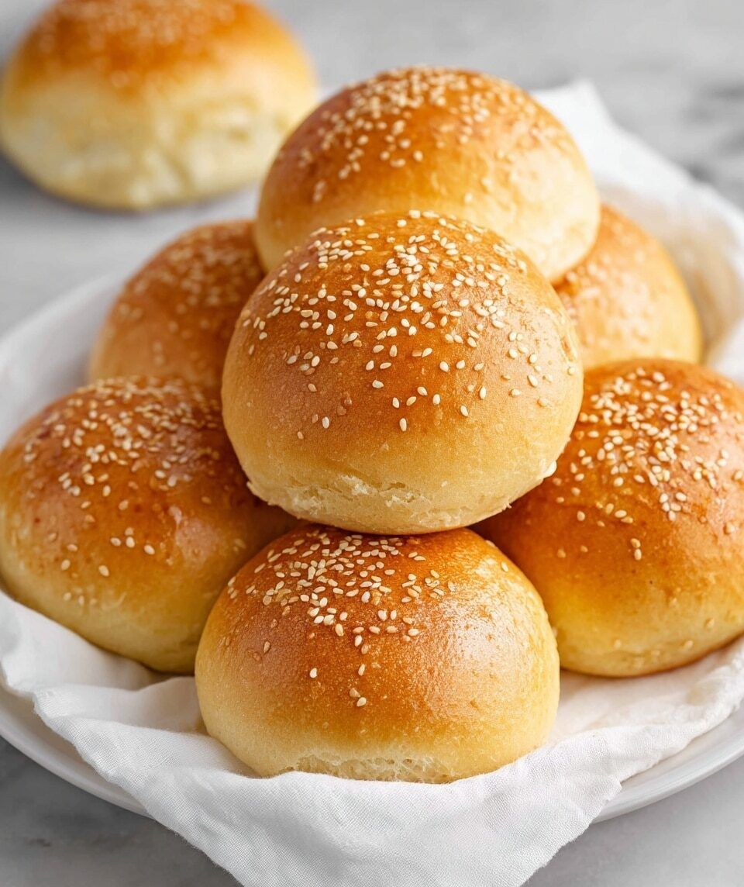

Teabun

A tea bun is a soft and lightly sweet baked bun that is perfect to enjoy with a cup of tea or coffee. It can be made with simple ingredients and has a soft texture with a slightly sweet flavor.
Ingredients
- 2 cups all-purpose flour
- 1/4 cup sugar
- 1 teaspoon baking powder
- 1/4 teaspoon salt
- 1/2 cup milk
- 1 egg
- 2 tablespoons butter
- 1 teaspoon vanilla extract
Steps
- Preheat the oven to 180°C.
- Mix the flour, sugar, baking powder, and salt in a bowl.
- Add the butter and mix until the mixture becomes crumbly.
- Add the milk, egg, and vanilla extract.
- Mix the ingredients until a soft dough forms.
- Divide the dough into small portions and shape them into buns.
- Place the buns on a baking tray.
- Bake for about 15–20 minutes until the buns are lightly golden.
- Allow the buns to cool slightly before serving.